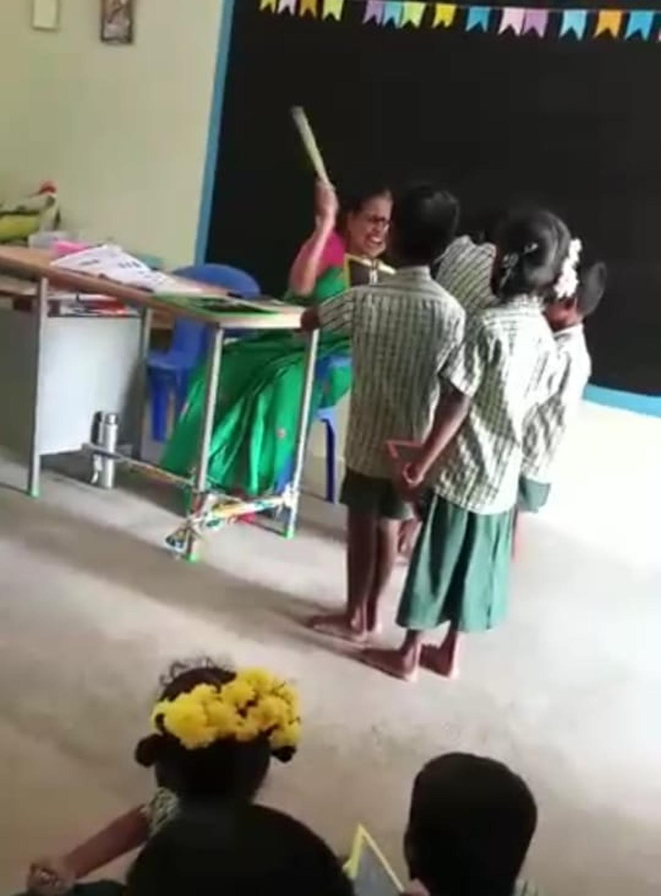
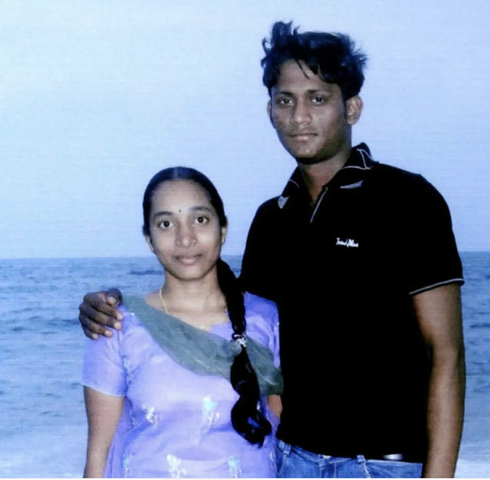
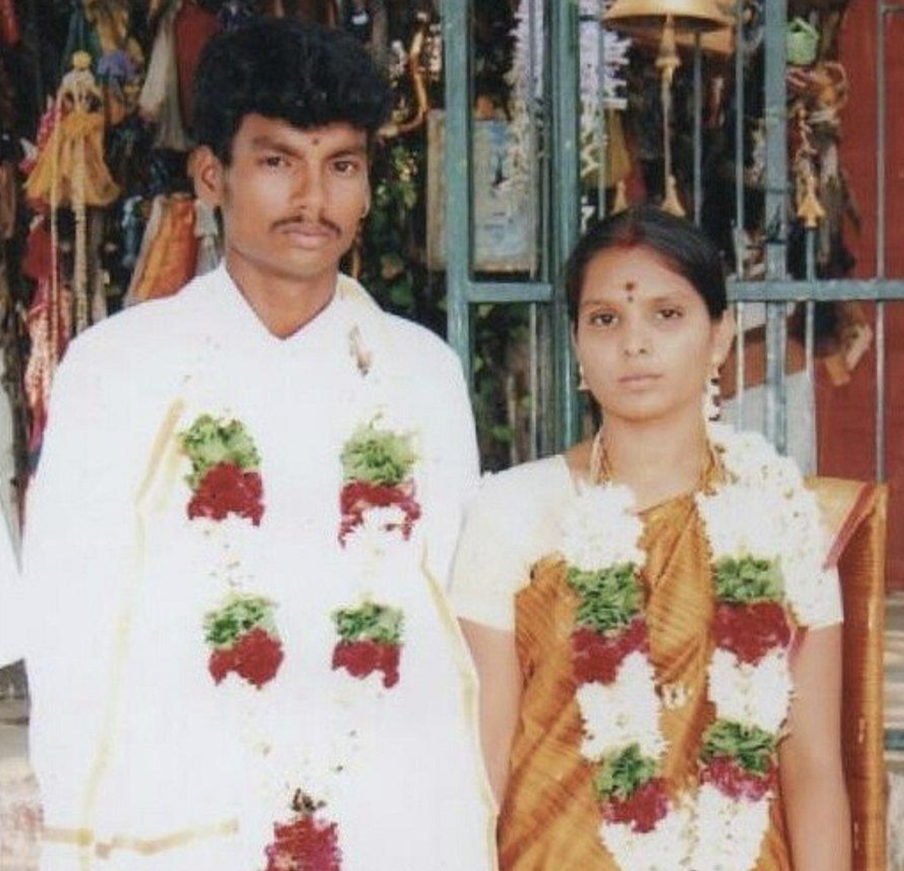
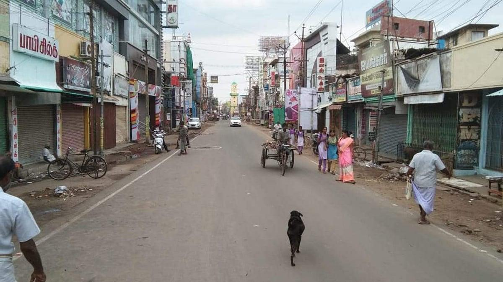
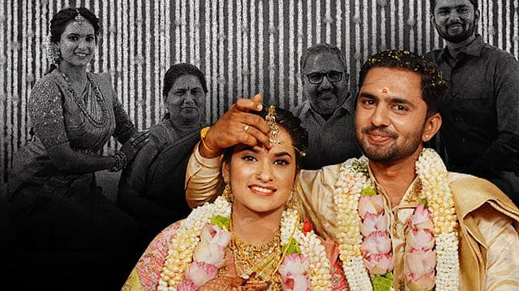
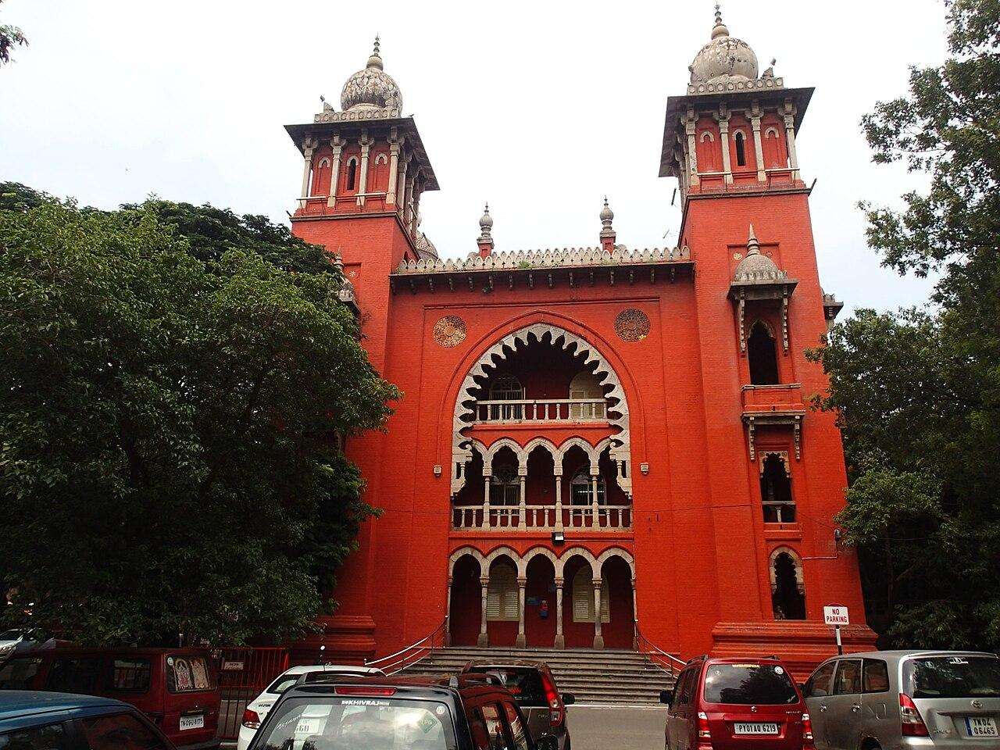

South Indian Relationships: From Adolescence to Marriage
Introduction
In Tirunelveli, where I grew up, a Tamil parent might beat a child to discipline them or to score high marks in maths and call it love. In other parts of the world, the same act is called child abuse. I wondered, which view is true?

The teacher would abuse the poor child, calling him as an Ox, Buffalo, fit for janitor job for scoring poorly in Maths. If anyone questions, She’d say, because I care and love this child, I abuse him and beat him.
A second puzzle came later. In the United States, an older parent in his eighties who can no longer look after himself may move into a nursing home that costs $6,000 to $12,000 a month, with full-time care, food, and support.
A Tamil family hears this and is shocked. They feel the children have abandoned him and brought shame and use this as a way to portray American culture in negative, shameful way. The American family sees the opposite, they are honoring their parent with the best round-the-clock care they can give.
Both families love their parent. They are speaking different languages of love.
This post tries to map those languages, using Tamil attitudes to love and marriage as the main case. And my point is families need to talk to each other, and to their own children, before a gap becomes a wound, and starts to hurt each other.
Why I chose to write this?
When I write on a topic, I am forced to be clear and precise. When I am wrong, readers can show me where, and that helps me build a more coherent understanding of the world.
Everyone has theories about love and relationships, how they should be, and how they should not be. If we write our views down, we can discuss what works and what doesn’t, understand each other, be accepting of each other.
I would like people from a wide spectrum of beliefs to be aware of one another, to acknowledge and be respectful. Where cultures differ, I would rather stay curious than assume, and build trust rather than assign blame.
Why is talking to opposite gender considered shameful in Tamil Society?
In Tirunelveli, if you are growing up from ages 13-26, relationships between men and women are frowned upon, socially, outside of marriage. I don’t think, Tamils who lived in Tirunelveli are allowed to date. Dating, meeting the opposite gender at these ages. These words would evoke strong emotions of feeling shame for either boys or girls in the town.
Tamil Parents keep tight-knit control over their children. Unfortunately, if you are a girl, most likely you won’t be allowed to travel much and have extremely strict curfew time. My first eye-opening cultural difference is, when I saw more American college women working in coffee shops, they were more independent, taking care of their own self, having their own career, family. I bring this up, because, Tamil girls are strictly not allowed outside or experience freedom. While some might be allowed, those are exceptional families.
Even though, relationships, dating, love is frowned upon in Tamil society. It doesn’t mean, every high-schooler or teenager, or even young college person follows it. Plenty of the young teenage Tamil girls chose to pursue a boy. They might go out for movies, or visit the beach. Most of the time, without their parents knowing and being aware. In high-schools, it is not promoted by teachers. People sit segregated, might not talk to each other, when adults are in the room. Even in churches, temples, mosques, gender segregation is common.
In the high-school I attended, it was strictly forbidden for a girl to talk to a boy. Even though it is co-educational school. If a teacher noticed, she might yell, scream at the student, or ask both of them to bring their parents. The teachers, owner of the school would dismiss the relationships between a boy and a girl as childish, incomplete, blame it on hormones. Majority of the time, they try to break up the relationship. The young teenager does not have support from society, nor young adult Tamils.
Anthropologist Leela Dube, in Women and Kinship (1997) (Dube 1997), helps explain why an ordinary friendship between a boy and a girl may be considered shameful in certain South Asian communities. Consider a teenage girl speaking regularly with a male classmate. The interaction itself need not involve anything sexual or inappropriate. She says, there’s a valuable sociological distinction between personal shame (feeling that one has done something wrong) and socially imposed shame (being made to feel disgrace because one has violated a community expectation). In this case, the girl is forced to experience, socially imposed shame because, because marriage boundaries, and control over women are closely connected to broader Family’s face and reputation.
Another reason is collective identity, the girl’s identity is broadly connected to the family’s reputation, honor. Majority of Tamil Parent’s see children as an extension of themselves, not as seperate individuals. So a child’s failure is experienced as a collective family collapse, and bringing shame to the family. Meanwhile, in the West, a girl child is understood as a distinct, autonomous entity, their choices, successes, and failures belong primarily to them.
In many Tamil families, a young man’s life is expected to follow a familiar path, study hard, score high marks, earn a degree, secure a respectable job with a stable income, and only then think about marriage. Once he is financially settled, his parents may begin searching for a suitable bride, considering her education, caste, religion, family background, and social standing.
But what happens when a fifteen- or sixteen-year-old boy falls in love with a girl and hopes to marry her someday? His parents may dismiss his feelings, asking, “You haven’t even finished your studies or found a job. What do you know about love or marriage?” Depending on the family, however, attitudes toward young relationships can differ considerably.
How Tamil families differ?
I propose distinguishing between two dimensions for understanding cultural values.
Socioeconomic position describes a family’s economic resources, occupational background, and social influence.
Social-cultural orientation describes attitudes toward individual freedom, gender equality, relationships, caste, sexuality, and parental authority. These dimensions may influence one another, but they are not interchangeable.
Socioeconomic Values
In Tamil society which is hierarchical in values, socioeconomic position also intersects with caste, inherited property, family networks, and local social influence. Although caste and socioeconomic class are distinct, they can reinforce one another and shape access to education, employment, marriage networks, and social opportunities.
These differences matter when examining love, marriage, and family relationships. A family experiencing financial insecurity may place particular importance on a prospective spouse’s stable employment, while a wealthy family may emphasize educational credentials, family background, or the preservation of inherited wealth and social standing. However, these are possible tendencies, not fixed rules.
Tamil families occupy diverse socioeconomic positions, ranging from agricultural laborers and informal-sector workers to salaried professionals, business owners, and established economic elites. For this discussion, I distinguish six illustrative socioeconomic categories to examine how economic circumstances and social standing may influence family expectations surrounding relationships and marriage.
| Category | Socioeconomic Position | Illustrative Background | A Hypothetical Family Example | Possible Challenges |
|---|---|---|---|---|
| A | Economically disadvantaged / Working class | Agricultural laborers, domestic workers, daily-wage employees, and informal-sector workers. | A family in rural Tirunelveli where the father works as an agricultural laborer and the mother undertakes occasional domestic work. They rent a modest house and depend on irregular earnings. | Irregular income may make it difficult to pay for food, medical treatment, transportation, and children's education. An unexpected illness or loss of employment can lead to borrowing or reduced household consumption. Limited savings may restrict the family's ability to withstand financial emergencies. |
| B | Lower-middle class | Clerical employees, shopkeepers, junior salaried workers, and lower-paid service employees. | A family in Madurai where the father is an office clerk and the mother operates a small tailoring business. They have relatively steady earnings but limited savings after meeting their monthly expenses. | Rising housing costs, school fees, medical bills, and the cost of supporting elderly parents can strain the family budget. Parents may prioritize stable employment for their children because they have limited financial reserves to support prolonged unemployment. |
| C | Middle class | Teachers, government employees, technicians, office workers, and small-business owners. | A family in Tirunelveli where one parent is a government schoolteacher and the other works in a bank. They own a modest house, receive regular salaries, and save for their children's education and retirement. | The family may need to balance university fees, housing loans, retirement savings, and support for aging relatives. Parents may experience pressure to preserve financial stability while helping their children pursue career opportunities that involve uncertainty. |
| D | Upper-middle class | Physicians, engineers, professors, IT professionals, senior managers, and established entrepreneurs. | A family in Chennai where both parents are physicians. They own a comfortable apartment, have substantial savings, and can finance postgraduate education for their children, including study abroad. | Demanding professional schedules may limit family time. Parents may have high expectations concerning academic performance, career success, and marriage compatibility. Some families may experience disagreements when their adult children's personal choices differ from parental expectations. |
| E | Wealthy business and professional elite | Large business owners, industrialists, high-income professionals, and substantial property owners. | A family in Coimbatore owns a successful textile manufacturing company employing several hundred workers. They hold multiple properties and significant financial investments. | The family may face business risks, succession planning, and disagreements over ownership or management responsibilities. Parents may expect their children to join the family enterprise or maintain relationships with established business networks. |
| F | Hereditary and socially influential elite | Families with longstanding landownership, inherited wealth, political influence, or established community authority. | A multigenerational family possesses inherited agricultural estates, commercial properties, and investments. Its extended relatives have longstanding connections within local business and community institutions. | Inheritance and property distribution may become sources of disagreement among relatives. The family may also encounter expectations to maintain its social standing, manage inherited assets, and preserve longstanding relationships or family traditions. |
These categories are descriptive rather than rigid classifications. Occupation alone does not determine social class, and families within the same occupational group may differ significantly in income, wealth, inherited assets, and social influence. More importantly, a family’s socioeconomic position should not be mistaken for its cultural values. A wealthy family is not necessarily socially liberal, and a family with limited economic resources is not necessarily conservative. To understand attitudes toward marriage, caste, gender, and individual freedom, we need a second dimension.
Four Tamil Families: Why Do Their Values Differ?
Why do some Tamil families give their adult children freedom to choose whom they love and marry, while others, sometimes equally educated, wealthy, and loving insist on making those decisions for them? Consider four hypothetical Tamil families. They represent different combinations of socioeconomic position and cultural values, not actual households or fixed categories within Tamil society.
Family E2: A Wealthy but Pragmatic Coimbatore Family
Consider a prosperous business family in Coimbatore. The parents value education, financial security, family reputation, and established community relationships. They prefer their children to marry someone from a similar social, religious, or economic background. When their daughter introduces a partner from another caste, they initially hesitate. But after meeting him, learning about his family, and understanding the couple’s plans, they may accept the relationship.
They value tradition, but their expectations are negotiable.
Family C1: A Traditional Middle-Class Tirunelveli Family
Finally, consider a middle-class family in Tirunelveli. The father is a government employee, and the mother is a homemaker. They value education, stable employment, religion, respect for elders, and family reputation. They discourage dating and close friendships between boys and girls. Their daughter faces stricter restrictions than their son. When she falls in love with someone from another caste, the parents oppose the relationship, fearing criticism from relatives and the wider community. They believe they are protecting their daughter’s future. She believes they are restricting her independence.
This family illustrates the tension between parental guidance and control over an adult child’s decisions.
These four families demonstrate that economic position, education, and cultural attitudes do not always move together. A wealthy family may be socially conservative, while a family with limited financial resources may support greater individual freedom. The spectrum from socially liberal to conservative is therefore an illustrative framework, not a scientific classification of Tamil families.
Matrix Visualizing values of Four Hypothetical Families
The matrix allows us to compare Tamil-families across parental authority, gender equality, dating, marriage, caste, religion, sexuality, individual autonomy, and family reputation.
Four Tamil Families, Different Values
Where do their beliefs converge and conflict? Explore 22 questions about authority, marriage, gender, and social norms. Each family is fictional.
| Value / question | B4 | E2 | D3 | C1 |
|---|
Compare two families
See where their answers differ, and where their values converge.
Methodological note. These are fully specified fictional profiles, constructed to illustrate contrasting norms. Their answers are not observations, survey estimates, or claims about families in Tirunelveli, Chennai, or Coimbatore. Color identifies the attitude in each answer, not a family's overall ideology. Some borderline classifications are interpretive. Comparison counts refer to differences in these fictional answers, not empirical cultural distance.
Attitudes to Love and Marriage
When a young Tamil man falls in love at twenty-two, a parent may say: First obtain a job. How will you support a household? That is not an unreasonable practical concern. But what happens if the young man is already financially secure and the objections turn instead to caste or family standing?
Imagine a financially independent professional woman in Chennai whose parents are proud of her postgraduate education but oppose her relationship with a colleague from another community. They describe their opposition as concern for her future. She sees the same opposition as a refusal to recognize her judgment as an adult. Both parties may care about family relationships, but the dispute is about who gets to make the final decision.
Not every arranged marriage involves coercion. Imagine another couple introduced by their families who speak at length about their expectations, develop affection, and freely decide to marry. Family participation can be constructive when the couple can genuinely accept or decline. While Tamil people use arranged versus love marriage to speak highly of arranged marriage or make it honorable. However, they miss out on focusing what qualities, activities, ways the couple could be happy in their relationship for long run.
Story 1: A Young Man in Tirunelveli
Imagine a 22-year-old man from a conservative lower-middle-class family in Tirunelveli. He has recently completed his undergraduate degree in mechanical engineering and is looking for employment. During college, he developed a romantic relationship with a young woman. They have known each other for several years and hope to marry. When he informs his parents, however, they object. His father asks, “You don’t even have a job. How are you going to support a wife and family?”
His mother is worried about the woman’s family background and whether their relatives would approve. The young man believes that his feelings are genuine and that he and his partner can build a future together. His parents believe that marriage requires more than affection. They emphasize financial security, maturity, and family caste. Both sides may have legitimate concerns, but their priorities differ. Should financial independence be a prerequisite for marriage? How should young adults balance romantic commitments with practical responsibilities?
Story 2: A Young Woman in Chennai
Consider a 27-year-old woman from an upper-middle-class family in Chennai. She has completed postgraduate education, works as a professional, and is financially independent. Her parents are proud of her accomplishments. However, they expect her to marry someone from a similar religious, caste, and socioeconomic background. She develops a relationship with a colleague whose background differs from hers.
When she tells her parents, they express disappointment and worry about cultural compatibility, religious differences, and reactions from extended relatives. From her perspective, she has become an independent adult capable of evaluating a potential life partner. From her parents’ perspective, their concerns arise from a desire to protect her future and preserve important family traditions. The disagreement raises an important question: At what point does parental guidance become interference in an adult child’s personal decisions? Can parents express their concerns while respecting their daughter’s right to choose her spouse? Can she listen to their concerns without feeling obligated to accept their preferred choice?
Story 3: A Family that prefers arranged marriage
Imagine a 29-year-old Tamil man whose parents have begun introducing him to prospective marriage partners. He has never been particularly interested in dating and is comfortable with his parents helping him find someone. He meets a young woman through family connections. They begin speaking regularly, discussing their careers, religious beliefs, personal values, financial expectations, and hopes for the future.
Over several months, they develop affection and decide to marry. Their marriage is arranged through their families, but both individuals have freely participated in the decision. This raises another interesting point: arranged marriage and romantic love are not necessarily opposites. Some individuals prefer finding partners independently. Others appreciate the involvement of family members. Still others combine both approaches. The more important questions may concern mutual consent, compatibility, personal choice, and the freedom to decline a proposed marriage.
These stories illustrate how different Tamil families understand marriage, even when they share similar hopes for their children’s happiness.
Real Stories from Tamil Society
A young Tamil engineer secretly marries the woman he loves, fearing his family’s disapproval. Two college students fall in love during their daily bus journeys, unaware of how fiercely their families might oppose their relationship. A landless agricultural labourer welcomes his son’s bride from another caste, challenging the very social boundaries that wealthier families sometimes defend. A young IT professional hopes to marry a Siddha doctor, only to find that love and professional success may not be enough to satisfy family expectations.
Elsewhere, young couples face parental opposition, caste-based violence, dowry demands, and abuse within marriage. Some families stand by their children; others place caste, reputation, and social standing above their happiness and safety.
Indian Laws on Inter-Caste Marriage
Indian law protects the right of consenting adults to choose their marriage partners, regardless of caste. These protections come from the Constitution, marriage legislation, and Supreme Court judgments.
Article 14 – Equality Before the Law: Guarantees equality before the law and equal protection of the laws. Read Article 14 (Constituent Assembly of India 1950).
Article 15 – Prohibition of Discrimination: Prohibits specified forms of discrimination, including on grounds of caste and religion. Read Article 15 (Constituent Assembly of India 1950).
Article 17 – Abolition of Untouchability: Abolishes untouchability and prohibits its practice in any form. Read the Constitution (Constituent Assembly of India 1950).
Article 21 – Life and Personal Liberty: Protects life and personal liberty, including adults’ freedom to choose their life partners as interpreted by the Supreme Court. Read the Constitution (Constituent Assembly of India 1950).
Hindu Marriage Act, 1955: Does not require spouses covered by the Act to belong to the same caste. An inter-caste marriage is legally valid when the Act’s conditions are satisfied. Read the Act (Parliament of India 1955).
Special Marriage Act, 1954: Provides a civil framework for marriage, including inter-caste and interfaith marriages, subject to statutory requirements. Read the Act (Parliament of India 1954).
Lata Singh v. State of Uttar Pradesh (2006): The Supreme Court affirmed adults’ freedom to marry outside their caste and called for protection against threats, harassment, and violence. Read the judgment (Supreme Court of India 2006).
Shakti Vahini v. Union of India (2018): The Supreme Court affirmed that family or community approval is not required for consenting adults to marry and directed measures against honour-based violence. Read the judgment (Supreme Court of India 2018).
A Tamil family may disapprove of an inter-caste marriage, but that disapproval gives it no legal authority to threaten, assault, unlawfully confine, or kill the adults involved.
However in reality, it is hard for young adults to disconnect with their family, choose their own life in Tamil society. As Tamil society is collectivistic, identities of young people are formed by being part of a family. Therefore, to give up is to lose their identity and purpose of existence.
Cuddalore, 2003: The Marriage That Cost Two Young Graduates Their Lives
Murugesan and Kannagi, Cuddalore, 2003.
Murugesan was a 25-year-old chemical engineering graduate belonging to a Dalit community. Kannagi, 22, studied commerce and belonged to the Vanniyar community. They had met while studying in Chidambaram and fallen in love. Murugesan had secured employment in Bengaluru, and the couple hoped to begin a life together. But Kannagi’s father, C. Duraisamy, was a locally influential panchayat president, and their relationship crossed a caste boundary her family refused to accept.
On 5 May 2003, the couple quietly registered their marriage in Cuddalore. They returned to their respective family homes, hoping to keep the marriage secret. Their future appeared possible: Murugesan was educated and employed, and their union had been legally registered. Yet in July, Kannagi’s brother began searching for him. On 8 July 2003, the couple were discovered, poisoned, and killed in front of villagers. The Supreme Court would later identify Kannagi’s father and brother as the principal perpetrators (Supreme Court of India 2025).
The tragedy did not end with their deaths. The initial police investigation was compromised, and members of Murugesan’s own family were falsely implicated. His father, Samikannu, pursued justice for years, eventually securing a CBI investigation. In 2021, eighteen years after the murders, a special court convicted thirteen people. Following appeals, the Supreme Court upheld the convictions of the eleven appellants before it on 28 April 2025 and awarded compensation to Murugesan’s father and stepmother (Supreme Court of India 2025).
The legal contradiction is striking. Murugesan and Kannagi were entitled to marry across caste lines, yet the opposition to their marriage became fatal. The Supreme Court explicitly identified the deeply entrenched caste hierarchy as the underlying cause of their murders.
Murugesan had achieved the education and employment that Tamil families often regard as prerequisites for marriage. Yet those achievements could not overcome the caste boundary imposed upon him by Tamil people.
Dharmapuri, 2012: Love on a College Bus

Divya and Ilavarasan, Dharmapuri, 2012–2013.
It began with an ordinary college journey. Divya and Ilavarasan lived in the same panchayat and travelled on the same bus. He studied computer science; she pursued nursing. Their friendship gradually developed into love. Ilavarasan belonged to a Dalit community, while Divya belonged to the Vanniyar community. Their education brought them together, but their caste identities would divide their families.
Ilavarasan’s father, Ilangovan, worked in a government hospital. Divya’s father, Nagarajan, was a junior clerk in a cooperative society. When the young couple secretly married in November 2012, Ilavarasan’s father was surprised but reportedly welcomed them into his home. Divya’s family opposed the marriage. Her father died by suicide shortly afterward, and devastating violence followed: three Dalit settlements were attacked, with numerous houses damaged or burned. The Madras High Court subsequently recorded the serious caste tensions and violence surrounding the case (Madras High Court 2013).
Amid these events were small, deeply human gestures. Ilavarasan’s parents bought Divya a carrom board, a chessboard, and a tablet to help her feel comfortable. In May 2013, her mother visited with sarees and sweets. She also sought Divya’s signature on documents connected with a dependent employment opportunity for Divya’s younger brother. Affection, economic security, grief, and community pressure had become entangled (Open Magazine 2013).
Divya eventually returned to her mother’s household. In June 2013, she told the Madras High Court that she did not wish to return to Ilavarasan. On 4 July 2013, he was found dead near railway tracks. Police concluded that he died by suicide, although his family disputed that finding (Sivan 2013).
This tragedy illustrates that caste status and economic standing are not interchangeable. Ilavarasan’s household enjoyed some occupational security, yet his Scheduled Caste identity remained central to the conflict. It also demonstrates how a marriage between two adults can become the focus of wider community tensions. The couple’s private decision to marry became a public struggle over caste, status, and community authority. In majority of times, due to pressure, coersion, many give up on their prospects and submit to their parental decision.
Udumalpet, 2016: The Landless Father Who Accepted His Daughter-in-Law

Shankar and Kausalya, Udumalpet, 2016.
Shankar’s father, C. Veluchamy, owned no agricultural land. He worked as an agricultural labourer and struggled to provide his children with opportunities he had never enjoyed. Believing education offered a path toward a better life, he sent Shankar to study in Pollachi.
There, Shankar met Kausalya, a young woman from a more prosperous and socially influential Thevar family. Her father, Chinnasamy, worked as a driver and financier. Their relationship began during college. Kausalya later recalled that Shankar approached her on a college bus and told her that she resembled his late mother. Friendship developed into love, and the couple eventually married despite opposition from her family.
According to Kausalya’s account, relatives offered Shankar ₹10 lakh to leave her. Veluchamy, by contrast, reportedly welcomed his daughter-in-law, believing that caste should not prevent the marriage. On 13 March 2016, Shankar and Kausalya were attacked near a crowded bus stand in Udumalpet. Shankar was killed, and Kausalya survived with serious injuries.
The case shocked Tamil Nadu. In 2017, a trial court sentenced Kausalya’s father and five others to death. But in June 2020, the Madras High Court acquitted her father of all charges and commuted the death sentences of five others to life imprisonment. The State appealed his acquittal to the Supreme Court (Madras High Court 2020; Talwar 2020). The High Court’s acquittal must be distinguished from the trial court’s earlier judgment.
Kausalya later became a campaigner against caste discrimination and continued supporting Shankar’s family. In 2018, when she remarried, Shankar’s father and grandmother attended the ceremony.
The contrast between these households is particularly revealing. One family possessed greater economic resources and social influence, while the other depended on agricultural wages. Yet Shankar’s economically disadvantaged father reportedly accepted a marriage across caste boundaries.The family with fewer financial resources demonstrated that social acceptance does not necessarily depend on wealth, education, or prestige.
Tirunelveli, 2025: A Young IT Professional and a Siddha Doctor
Kavin Selvaganesh, Tirunelveli, 2025.
More than two decades after the Cuddalore murders, another relationship between two educated young adults became the center of a murder investigation in southern Tamil Nadu.
Kavin Selvaganesh was the only son of Chandrasekar, a farmer, and Tamilselvi, from Arumugamangalam near Eral. He belonged to the Devendra Kula Vellalar community, classified as a Scheduled Caste, and worked in information technology in Chennai. Subhashini, the woman he loved, was a qualified Siddha doctor from a Maravar family. Both her parents, Saravanan and Krishnakumari, served as police sub-inspectors.
Their relatives described a longstanding relationship. When Kavin fell ill in Chennai in 2023, Subhashini reportedly travelled to see him. His mother later recalled asking her to reconsider the relationship because of opposition from her family. The couple nevertheless hoped to make their intentions known.
On 27 July 2025, Kavin accompanied relatives to a hospital in Tirunelveli. He was subsequently killed in a public street attack, and Subhashini’s brother, Surjith, was named as the principal accused. Kavin’s grieving family demanded action against Subhashini’s parents as well.
But the subsequent legal proceedings require careful distinction between allegations and findings. Subhashini publicly denied her parents’ involvement. On 29 September 2026, the Madras High Court quashed the charge sheet against them, finding insufficient material to sustain the allegations. On 16 October 2026, the Tamil Nadu government moved the Supreme Court challenging that decision. Proceedings against other accused also continued (The New Indian Express 2026a, 2026b).
The State’s appeal does not itself establish that the parents were criminally involved. Their liability remains a separate legal question.
What makes this story relevant to the broader discussion is the contrast between professional advancement and inherited caste expectations. Kavin had built a career in technology, while Subhashini had qualified in medicine. Their families occupied different positions within the local social hierarchy, and their relationship became entangled in caste-related opposition. Professional achievement can transform economic opportunities without necessarily removing the social boundaries that influence marriage.
Marriage Beyond the Wedding: Consent, Dowry, and Abuse
The conflicts do not always end when a couple gets married. Sometimes marriage itself becomes the beginning of another struggle, involving parental authority, financial demands, and the rights of husband and wife.
Tiruchirappalli, 2025: The Marriage She Never Chose
Sridharshini was in love with a classmate from a Scheduled Caste community. Her parents opposed the relationship because of caste differences. According to her testimony recorded by the Madras High Court, her family instead forced her into marriage with her maternal uncle. She had already approached the police, and her father had promised not to compel her to marry. Yet the marriage took place.
She eventually escaped. In June 2025, the Madras High Court recognized that she had left voluntarily, criticized the police response, and directed protection for her and those sheltering her (Madras High Court 2025).

What does parental love mean when a daughter must flee her own family to exercise her right to choose?
Tiruppur, 2025: The Wedding That Money Could Not Save
In April 2025, Rithanya married Kavin Kumar in a lavish ceremony. Reports described substantial gold gifts and a Volvo car worth approximately ₹70 lakh. Yet within months, the 27-year-old was dead. Before her death by suicide in June, she sent voice messages alleging physical and psychological abuse and continuing dowry demands. Her husband and in-laws were arrested; the allegations must not be mistaken for final findings of guilt (Janardhanan 2025; The News Minute 2025).

A marriage could be celebrated with wealth, expensive gifts, and social prestige, yet none of these guaranteed a woman’s safety. What is the value of a prestigious marriage if the person inside it suffers?
Chennai, 2025: A Marriage That Lasted 43 Days
Their wedding took place in February 2021. Within weeks, the wife alleged that her husband humiliated her, pressured her sexually, demanded additional dowry, and repeatedly questioned her character. Even after separation, harassment reportedly continued.
In May 2025, a Chennai court ordered the husband to pay ₹5 lakh in compensation and restrained him and his parents from approaching her. The court found sustained physical, verbal, and emotional abuse during and following a marriage that had lasted just 43 days (Sundaram 2025).

The case exposes another contradiction. Marriage may confer the social status of husband and wife, but it does not confer ownership over another person’s body, dignity, or freedom.
What These Stories Reveal About Caste and Marriage
These stories unfolded over more than twenty years, and there are many countless stories. The families included agricultural labourers, farmers, clerks, engineers, businesspeople, a medical professional, and police officers. Their educational qualifications and economic circumstances differed considerably, yet caste boundaries and expectations about family authority repeatedly became sources of conflict.
Anthropologically, caste has historically influenced marriage through endogamy: the expectation that individuals marry within socially recognized group boundaries. Marriage therefore concerns more than the compatibility of two individuals. It can also affect kinship networks, inherited status, property relationships, and community identity. This helps explain why a seemingly private romantic decision can provoke a wider social response.
Yet these stories also demonstrate that socioeconomic position and cultural attitudes are not interchangeable. A landless father may welcome an intercaste marriage, while a more prosperous family may oppose one. Education and occupational achievement do not guarantee that inherited prejudices will disappear. The Indian legal position is considerably clearer. Adults who satisfy the relevant marriage laws may marry across caste boundaries. Families may offer advice or express disagreement, but neither caste customs nor perceived family honor authorizes threats, violence, or coercion (Supreme Court of India 2006, 2018). Education and economic advancement has not necessarily weaken caste boundaries, So what would?
Tamil Marriages: have we been looking for the wrong qualities?
We have discussed how Tamil families differ in socioeconomic position, caste, religion, and social-cultural orientation. These differences become especially important when young men and women begin considering marriage. Growing up in Tirunelveli, I observed that marriage discussions often centered on whether the prospective bride or groom belonged to the same caste, followed the same religion, possessed good educational qualifications, earned a respectable income, and came from a suitable family.
Parents may spend considerable time investigating a prospective spouse’s employment, education, family reputation, and financial stability. Some families consult astrologers, compare horoscopes, and seek approval from extended relatives. These considerations are not necessarily irrational. Economic stability matters. Shared religious convictions can provide a foundation for marriage. Families may offer valuable advice based on their experiences. But something seems to be missing.
How much do these qualifications tell us about whether two people will actually enjoy happily being married to one another?
I wonder whether Tamil society has misunderstood something fundamental. We have developed elaborate expectations about who is suitable for marriage, but have given comparatively little attention to what makes relationships genuinely happy? This does not seem to either be the theme of Tamil movies, where the findings could be weaved into a story to communicate.
Different Expectations
Consider how young Tamil men and women understand premarital relationships. In July 2022, a 28-year-old man from eastern Tamil Nadu described his experiences searching for a wife through arranged marriage. He had never been involved in a romantic or sexual relationship. When prospective brides disclosed previous relationships involving physical intimacy, he struggled to accept their pasts. Interestingly, he did not consider these women immoral. He explained that he liked some of them, but wanted a spouse whose experiences resembled his own.
He turned to an online community to question his thinking. Read his anonymous first-person account.
This anonymous, unverified account cannot tell us how widespread such attitudes are. But it illustrates an interesting question, if someone has deliberately abstained from sexual relationships before marriage, is it unreasonable to seek a spouse who has made the same choice? Now consider the reverse. Imagine a Tamil woman who has chosen premarital abstinence, perhaps because of her religious convictions or personal values. She may reject a prospective husband who has previously had sexual partners. Another woman may be entirely comfortable with his past, provided he is honest, faithful, and committed to their relationship. These are hypothetical examples, not documented interviews. They demonstrate how women within the same cultural community may hold different expectations.
Research suggests that these differences in attitudes are real. A survey involving 952 college students in Vellore, Tamil Nadu, found that 45% approved of premarital romantic relationships, while 20.3% approved of premarital sexual relationships when the individuals were in love. The proportion approving of premarital romantic relationships was 53.3% among male respondents and 24.7% among female respondents (“Knowledge and Attitudes Toward Sexual Health and Common Sexual Practices Among College Students: A Survey from Vellore, Tamil Nadu, India” 2019).
These findings describe the surveyed students rather than all young people in Tamil Nadu. Nevertheless, they reveal considerable differences in attitudes toward love and sexuality, even within a relatively narrow age group. There is nothing inherently unreasonable about wanting a spouse who shares one’s religious or sexual convictions. However, we should distinguish between personal compatibility and moral judgments about another person’s worth. A person’s virginity may matter greatly to a prospective spouse. But does it tell us whether that person will be kind, faithful, emotionally mature, or capable of handling disagreements? These are different qualities. We should not assume that possessing one guarantees the others.
Tamil Marriages: What are families actually choosing?
In my earlier essay, The All-or-Nothing Marriage: How the Best Marriages Work, I reflected on the differences between Tamil and Western understandings of marriage(Rejeleene n.d.). I argued that marriage in Tamil Nadu is often understood through family honor, customs, religion, and responsibilities toward relatives, rather than exclusively through individual fulfillment. This distinction has an anthropological foundation. In Women and Kinship (1997), anthropologist Leela Dube examined how kinship systems shape gender relations, marriage arrangements, residence, inheritance, access to resources, and family responsibilities across South and Southeast Asia (Dube 1997). Her work helps us understand why marriage cannot always be explained as a private relationship between two individuals.In many Tamil communities, marriage connects families, establishes obligations between relatives, influences inheritance and residence, and can preserve caste and religious boundaries. From the family’s perspective, these arrangements serve important social purposes. From the perspective of the individuals entering marriage, however, another set of questions becomes important.
Do they enjoy one another’s company? Do they understand each other’s expectations? Can they discuss disagreements without humiliation or fear? Will they support each other’s aspirations? Can they develop affection, trust, and emotional intimacy?
Anthropologically, the institution of marriage may reproduce relationships between families and across generations. Psychologically, a satisfying marriage requires an interpersonal relationship between the spouses themselves. These are related, but they are not identical.
A Tamil marriage can satisfy the expectations of two families without necessarily satisfying the emotional needs of the two individuals entering it. This may be one of the most important distinctions missing from conventional discussions of arranged marriage.
What happens after marriages?
Once the wedding ceremonies have ended and relatives return to their homes, the husband and wife must begin living together. A study published in 2026 by Joseph Paul Jayaseelan and Victoria Narciso Apuan examined ten college-educated couples in arranged marriages in Tamil Nadu. The researchers explored how newlyweds negotiated differences in personality, emotional expectations, communication, personal freedom, and relationships with in-laws (Jayaseelan and Apuan 2026). Their findings identified acceptance, mutual understanding, and constructive approaches to disagreements as important aspects of adjustment. Five areas of difficulty deserve particular attention. These are recurring problems discussed in relationship research, not a statistically established ranking of the five most common problems among Tamil couples.
Communication and emotional compatibility. Two individuals may share the same education, caste, religion, and socioeconomic background but express emotions very differently. One may want to discuss disagreements openly, while the other avoids confrontation. What one person considers respectful silence, another may experience as emotional distance.
Intimacy and sexual expectations. Young men and women raised in conservative environments may have had little opportunity to discuss physical intimacy openly. Yet marriage introduces expectations of affection and sexual closeness. In a 2005 Chennai study, Sudha Sivaram and colleagues interviewed 43 individuals and conducted 12 focus groups in selected low-income communities. They found limited communication about sexual behavior and sexual health between some married spouses (Sivaram et al. 2005). Marriage changes the social acceptability of intimacy, but does not automatically prepare individuals to communicate their desires, concerns, or boundaries.
Gender roles and household responsibilities. A woman may have been encouraged to obtain postgraduate qualifications and build a professional career, yet discover that her husband or in-laws expect her to perform most domestic responsibilities. A husband may understand his primary responsibility as earning an income, while his wife expects a more equal sharing of household work. Two educated individuals may therefore have very different understandings of what it means to be married.
Parental authority and personal independence. Extended families can provide financial, emotional, and practical support. However, spouses may disagree about where they should live, how much money they should contribute to parents, whether a woman should continue working, or how relatives should participate in decisions concerning children. One spouse may regard parental involvement as an expression of love, while the other experiences excessive interference as a limitation on independence.
Trust, honesty, and handling conflict. Previous relationships, financial secrecy, jealousy, and differences in expectations may create distrust. Some couples learn to resolve disagreements constructively; others struggle with repeated suspicion or resentment. Serious coercion or domestic violence is a different and more severe issue, not an ordinary disagreement that can be resolved by asking one spouse to compromise.
These problems are not unique to arranged marriages. Couples who chose each other through romantic relationships may experience them too. The underlying issue is that Marital compatibility involves more than the characteristics families ordinarily examine when selecting a Spouse.
What does scientific research say about happy marriages?
Instead of asking only why marriages fail, perhaps we should begin examining what makes them satisfying. In 2020, psychologist Samantha Joel and colleagues published a large-scale study in Proceedings of the National Academy of Sciences, analyzing 43 longitudinal datasets collected by 29 research laboratories(Joel et al. 2020).
Using machine-learning methods, the researchers examined which characteristics were most strongly associated with how individuals evaluated their romantic relationships.
Five relationship-specific predictors stood out:
- Perceived partner commitment: believing that one’s partner genuinely wants the relationship to continue.
- Appreciation: feeling valued and appreciated by one’s partner.
- Sexual satisfaction: experiencing a mutually satisfying intimate relationship.
- Perceived partner satisfaction: believing that one’s partner is happy in the relationship.
- Conflict: how disagreements and tensions are experienced within the relationship.
These findings do not establish five universal causes of happy marriage, nor were they derived specifically from Tamil couples. The researchers also found that their models could not reliably predict which relationships would improve or deteriorate over time. Nevertheless, the findings raise an interesting question.
When Tamil families investigate a prospective bride or groom, how much attention do they give to these relationship qualities?
We may know a young man’s salary, degree, caste, and family background. But do we know how he responds when he is angry? Whether he appreciates his spouse? Whether he can admit that he is wrong?
We may know a young woman’s educational qualifications, occupation, religion, and family background. But do we know what she expects from marriage, how she expresses affection, or whether she shares her prospective husband’s understanding of personal responsibility? Of course, these qualities cannot be assessed perfectly before marriage. People change, and relationships develop through shared experiences. But that is precisely why marriage preparation should involve more than comparing qualifications. Educational achievement tells us something about a person’s academic abilities. Income tells us something about earning capacity. Family background tells us something about social circumstances. None of these, by itself, tells us how that person will behave as a husband or wife.
Have We Misunderstood the Meaning of Adjustment?
In my earlier essay(Rejeleene n.d.), I mentioned a familiar Tamil expression:
Adjust panni vaazhanum:அட்ஜஸ்ட் பண்ணி வாழணும்.
Roughly translated, it means learning to adjust and live together. There is wisdom in this expression. Two individuals will inevitably differ in habits, preferences, expectations, and temperament. A lasting relationship usually requires patience, forgiveness, communication, and a willingness to accommodate one another. But the expression also deserves closer examination.
Who is expected to adjust, and how much?
If both spouses willingly accommodate one another, compromise can strengthen their relationship. But if one individual is repeatedly expected to sacrifice personal freedom, career aspirations, emotional well-being, or dignity, adjustment can become a justification for inequality. We should also distinguish between marital stability and marital happiness. Two people may remain married for forty years because they love and appreciate one another. Another couple may remain married because divorce carries social stigma, because of financial dependence, or because they are concerned about their children. Both marriages may appear equally successful when judged simply by their duration. But the experiences of the people living within them may be entirely different. A Tamil marriage lasting forty years tells us that it endured. It does not necessarily tell us whether the individuals were happy. This is why divorce rates or marital duration alone cannot establish that one cultural approach to marriage produces greater well-being than another.
Concluding Reflections
One major gap is Tamil society is unable to use public language for coherently describing, contentful competing visions of relationships, marriage, love. From this, younger Tamils could draw from, contest, debate, and emulate for their own lives. Although tamil families might be practicing in their lives as a family, yet many are unable to articulate coherently, why and how it works, in contrasting with other versions.
Consider four possible visions of marriage. One emphasizes lifelong duty, family solidarity, and obligations across generations. Another emphasizes companionship, emotional intimacy, and personal choice. A third prioritizes religious commitments, fidelity, and shared moral obligations. A fourth emphasizes individual autonomy, gender equality, and the freedom to renegotiate responsibilities. These are not necessarily mutually exclusive. Nor is any one vision automatically successful. Each contains valuable commitments, difficult trade-offs, and questions that deserve examination.
Perhaps one of the greatest contradictions within Tamil society is that we encourage young people to become educated, professionally successful, and financially independent, yet some families remain uncomfortable allowing those same adults to decide whom they love and marry. We teach young people to respect others, but sometimes discourage ordinary friendships between boys and girls. We expect them to become responsible husbands and wives, yet may give them few opportunities to develop the communication skills, emotional understanding, and mutual respect that intimate relationships require.
We value family honor, but preserving a family’s reputation should not come at the expense of another person’s dignity and independence. Tamil families have invested enormously in their children’s education, careers, financial security, and marriage prospects. These investments matter. Yet we have developed elaborate expectations concerning caste, religion, educational qualifications, income, family reputation, and sometimes horoscope compatibility, without devoting comparable attention to understanding what makes marriages genuinely happy. Consider Tamil couples who have been married for thirty or forty years. Some may have built relationships characterized by affection, trust, companionship, and mutual appreciation. Others may have remained together despite unhappiness, persistent disagreements, or unequal responsibilities.
It’s true, the length of a marriage does not necessarily tell us how happy the people within it have been.
Rather than assuming that long-lasting marriages are necessarily successful, we can consider examining the experiences of both spouses. We could study how affection develops, how disagreements are resolved, how responsibilities are shared, and how couples support one another through illness, financial hardship, and personal disappointments. We could consider also investigating whether similarities in caste, religion, education, and socioeconomic background predict marital satisfaction, or whether emotional maturity, commitment, kindness, trust, and mutual appreciation are more consequential.
These are empirical questions that deserve careful study. Perhaps Tamil society has spent generations teaching young people how to become eligible for marriage without devoting comparable attention to teaching them how to become good partners to one another.
I return to what I witnessed growing up in Tirunelveli, where even an ordinary friendship between a boy and a girl could be treated as shameful. I hope future generations of young Tamil men and women grow up in a society where friendship is not automatically viewed with suspicion, where young adults can discuss relationships openly with their families, and where parents guide their children without denying them the freedom to make their own decisions.
Perhaps the change we need is not simply in how Tamils arrange marriages, but in how we teach young people to understand, respect, and love one another.
Tamil Families Social Attitudes Spectrum
I propose a simple continuum extending from social liberalism on the left to social conservatism on the right. For visual clarity, the spectrum uses blue for socially liberal orientations, purple for centrist or pragmatic orientations, and red for socially conservative orientations. The purpose of this spectrum is describe cultural attitudes. So, we can describe differences in values and understand why families sometimes disagree about personal relationships, marriage, and individual choice.
At the far-left end are families that place considerable emphasis on personal autonomy, gender equality, and acceptance of diverse identities and relationships. These families may accept intercaste and interreligious marriages, support LGBTQ individuals and relationships, and regard marriage as a decision belonging primarily to the adults involved.
At the far-right end are families that place considerable emphasis on inherited traditions, caste and religious boundaries, parental authority, and preservation of family reputation. They may oppose intercaste marriage, discourage dating, reject LGBTQ relationships, and insist that parents or elders should exercise decisive influence over marriage.
Between these ends are families whose attitudes combine traditional expectations with varying degrees of flexibility.
LGBTQ acceptance, gender equality, personal autonomy
Supports individual choice with family consultation
Balances family traditions with flexibility
Strong preferences concerning caste, marriage, tradition
Rigid caste boundaries, parental authority, restricted relationships
This is a conceptual spectrum rather than a scientifically validated measurement instrument. The numbers illustrate degrees of social-cultural orientation. They do not represent population estimates or empirically measured attitudes. The colors describe social attitudes, not affiliation with political parties in India or the United States.
This distinction helps explain a striking contradiction. A family may support a daughter studying medicine, taking professional responsibility, earning a salary, and moving abroad, while denying that she should choose her own spouse. Professional competence and family authority are being judged according to different rules. Education can raise family prestige while romantic autonomy threatens established boundaries. Higher education does not automatically dissolve caste or gender expectations.